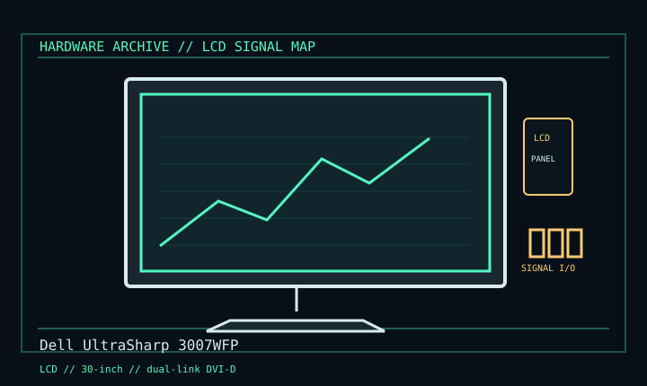

[ INDIVIDUAL COMPONENT // DISPLAYS ]
Dell UltraSharp 3007WFP
30-inch wide-gamut workstation LCD, mid-2000s. LCD

IDENTIFICATION: Verify the complete model/revision on the rear label. Specifications are tied to the cited manual/specification; variant-dependent values are qualified rather than generalized.
Specifications
| Catalog subcategory | Lcd Displays |
|---|---|
| Exact product/family | Dell UltraSharp 3007WFP |
| Era | 30-inch wide-gamut workstation LCD, mid-2000s. |
| Panel / image | 30-inch active-matrix TFT LCD; 2560 × 1600 at 60 Hz, 16:10. |
| Input / host | One DVI-D dual-link input; native mode requires dual-link DVI GPU output and true dual-link cable. |
| Other connections | USB 2.0 hub and card reader are data peripherals, not video inputs. No HDMI, VGA or DisplayPort on documented model. |
| Mechanical | 100 × 100 mm VESA and adjustable stand; use model guide/label for mains ratings. |
Revision, signal & host compatibility
Distinguish 3007WFP from 3007WFP-HC; panel gamut differs. A modern GPU may require a powered active DisplayPort-to-dual-link-DVI adapter. Passive adapters/single-link DVI cannot achieve native resolution.
Match source signal type, sync/timing, connector pinout, bandwidth and power path to this exact display. Physical connector fit alone does not establish electrical or timing compatibility.
Preservation & repair notes
Preserve stand/cable and test at native resolution; check hub/card-reader separately. Record HC/non-HC and backlight state. Clean with lint-free cloth; consult Dell service documentation before any repair.
Record model suffix, serial/date label, accessories, image condition, configuration, source document and repair history. CRT high-voltage, LCD backlight and OLED panel risks require appropriate service training and the correct manual.
Manufacturer manuals & references
- Dell 3007WFP User’s GuideManufacturer manual for native mode, dual-link and safety.
- Dell 3007WFP User Guide mirrorConnection diagram and operation reference.